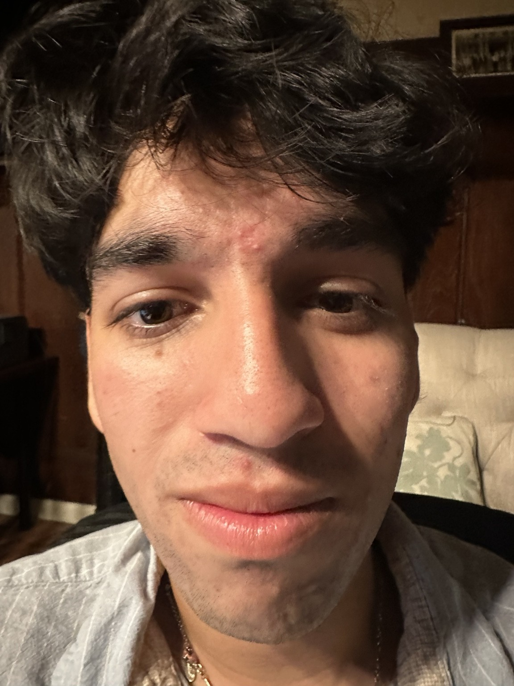
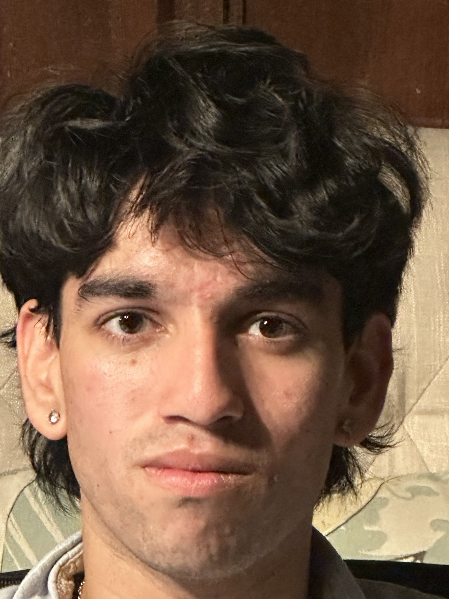
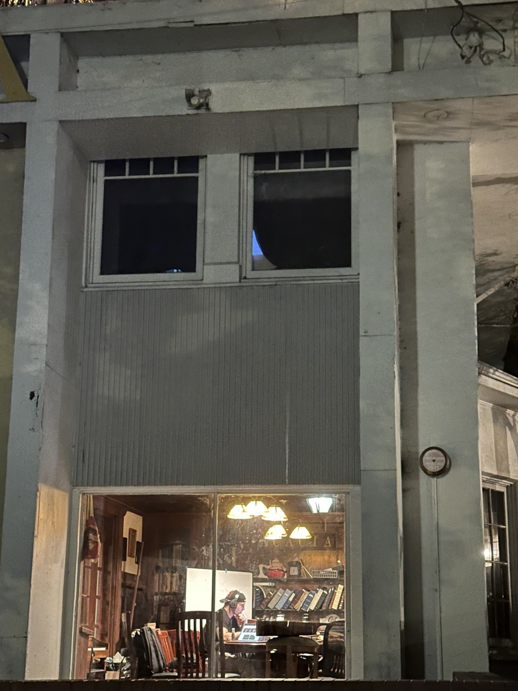
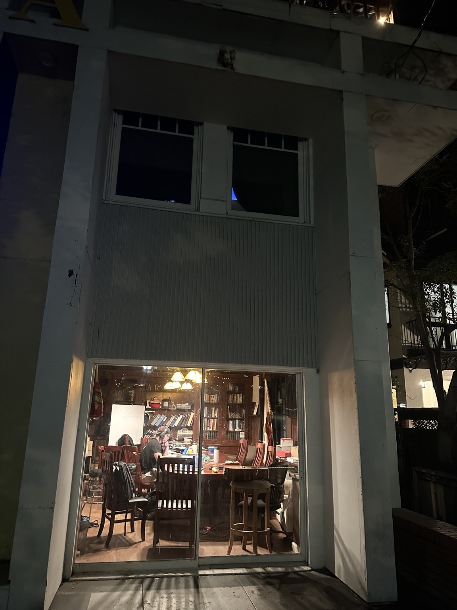
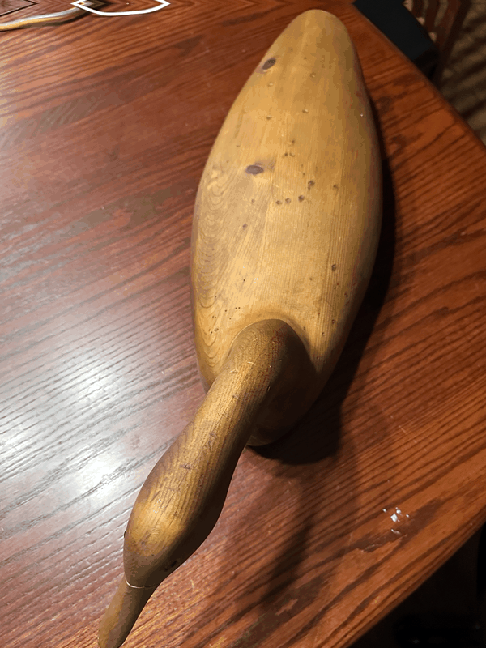

UC Berkeley · CS180 · Fall 2026
Project 0
Becoming Friends with Your Camera
Exploring how camera position and focal length change perspective, apparent depth, and the relationship between a subject and its background.
Selfie: The Wrong Way vs. The Right Way
The first image was taken very close to the face. For the second image, I stepped several feet back and zoomed in so the face remained roughly the same size in the frame.


Intuition
This surprised me a little because the zoom is not really what changes the face shape. In the close-up photo, the camera is so near my face that my nose is much closer to the lens than the rest of my face, so it gets exaggerated. When I backed up, those distance differences mattered less, and zooming in mostly just made my face fill the frame again.
Architectural Perspective Compression
I first photographed the building from farther away while zooming in, then moved closer and used a wider field of view while keeping the building at approximately the same scale in the frame.


Intuition
The far-away zoomed photo makes the front of the building feel flatter, almost like the different parts of the scene are stacked closer together. When I moved closer and used a wider view, the building felt deeper and more dramatic because nearby parts of the scene became much closer to the camera than the parts farther back.
The Dolly Zoom
I moved the camera backward while zooming in, taking seven still images while keeping the wooden bird approximately the same size in frame.

Seven still photographs aligned and cropped into a smoothly looping animation.
Intuition
For the dolly zoom, I tried to keep the wooden bird about the same size while stepping backward and zooming in. The bird stays fairly steady, but the space around it changes because the camera position is changing. The background starts to feel flatter as I move farther away, which is what creates the strange stretching/compressing effect.